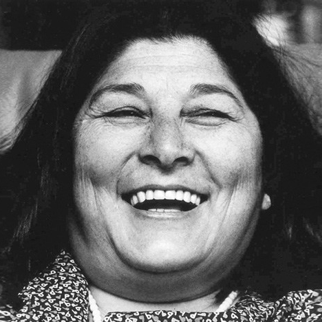
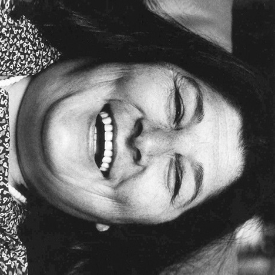
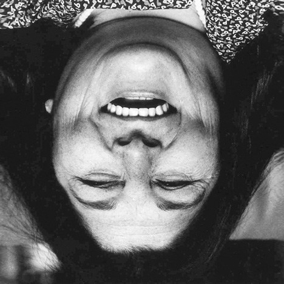
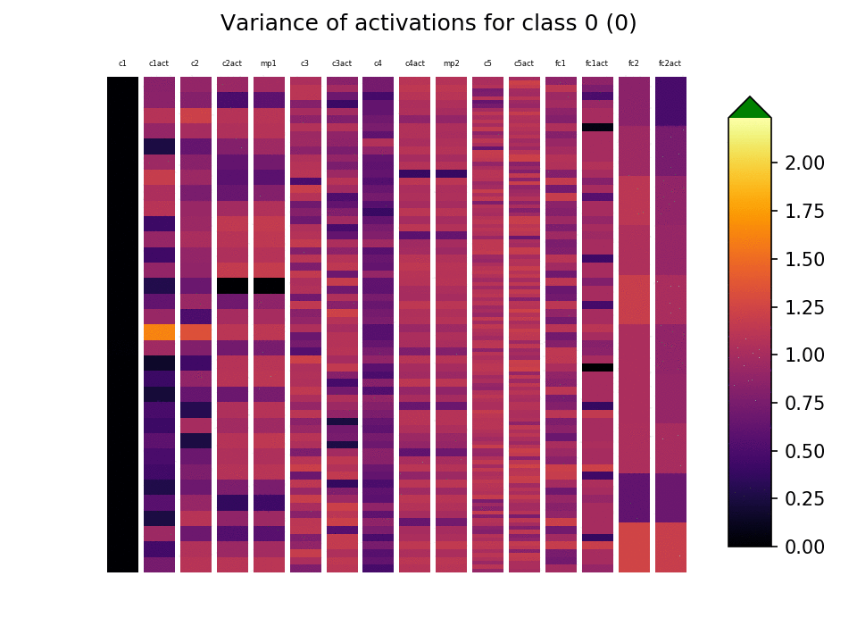
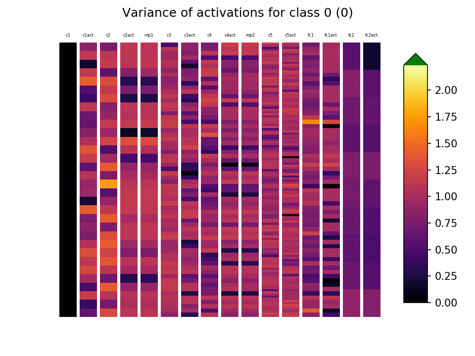

name: inverse layout: true class: --- class: middle, inverse .right[ [github](https://github.com/facundoq/rotational_variance) ] *** .frontimage[  ] .left[ #### Facundo Quiroga¹, Jordina Torrents-Barrena², #### Laura Lanzarini¹, Dómenec Puig-Valls² # Measuring transformation (in)variances # in Neural Networks <!-- .sampleimage[  ] .sampleimage[  ] --> *** .foot[ [.logo[]](http://weblidi.info.unlp.edu.ar/) ¹ **III-LIDI** Instituto de Investigación y Desarrrollo en Informática, **Universidad Nacional de La Plata**, *Argentina* [.logo[]](http://deim.urv.cat/~rivi) ² **IRCV** Intelligent Robotics and Computer Vision Group, **Universitat Rovira i Virgili**, *Spain* ] ] --- class: inverse,center # Brain vs Rotation (180°)  --- class: inverse,center # Brain vs Rotation (90°)  --- class: inverse,center # Brain vs Rotation (0°)  Mercedes Sosa --- class: inverse,center # How do we encode <p style="float:left;font-size:4em;">  =  =  </p> .left[ * In our brains? * In a Neural Network? ] --- class: inverse,center # Neural Networks .mainimage90[] .left[ * Properties * Structured by layers/activations * Complex, distributed representations ] --- class: inverse,center # Neural Networks vs Rotations .mainimage80[  ] --- # *Invariant* Neural Networks * A network $f$ is invariant to a set of transformations $T= [t_1,t_2,\dots,t_n]$ if $ \forall x$ $$f(t_1(x))=f(t_2(x))= \dots =f(t_n(x))$$ * If $T= [R0,R90,R180]$ .mainimage50[  ] --- # *Invariant* Neural Networks - Current approaches 1. Correct rotation with another model .imagemodels[] 2. Invariant by *design* (30+ models proposed in the last few years) .imagemodels[] 3. Invariant by *training* - with data augmentation .imagemodels[] 4. Hybrids --- # *Invariant* Neural Networks - Evaluation .rotationvsaccuracy[  .greenbox[] *Variant* model, .graybox[] *Invariant* model ] 1. Accuracy vs Rotation Angle (image) * **Black box** measure * Standard 2. [Lenc and Vedaldi 2014](https://arxiv.org/abs/1411.5908) measure *equivariance* * Generalization of *invariance*. * Hard to use, various assumptions. * Not used (8 citations). --- .floatright[ [tf playground](https://playground.tensorflow.org) ] # Our approach - Motivation .mainimage90[] * Limitations of past approaches * Disregard internal representations * No insight on efficiency of encoding --- class: inverse layout: true --- # Our approach - Motivation .heatmap_sample[ ] .mainimage60[] 1. Measure invariance in **each activation** 2. Invariance is hard to measure * Measure **variance** instead --- # Proposed measure $V$ - Setup * Given * Activation function $a(x)$ * Samples $ X = \[ x\_1, \dots, x_{n} \] $ * Transformations $ T = \[ t\_1, \dots, t_{m} \] $ * Measure variance $V$ for single activation $a$ -- .matrix[  ] * Activations value matrix $A$: $$ A = \begin{bmatrix} a(t\_1(x\_1)) & \cdots & a(t\_m(x\_1)) \\\ \vdots & \ddots & \vdots \\\ a(t\_1(x\_n)) & \cdots & a(t\_m(x\_n)) \end{bmatrix} $$ -- * Two sources of variance * Samples * Transformations --- # Proposed measure $V$ - Definition .matrix2[  ] $$ A = \begin{bmatrix} a(t\_1(x\_1)) & \cdots & a(t\_m(x\_1)) \\\ \vdots & \ddots & \vdots \\\ a(t\_1(x\_n)) & \cdots & a(t\_m(x\_n)) \end{bmatrix} $$ -- * Variance over transformations (desired) $$V\_t = \text{mean variance over columns of A} $$ -- * Variance over samples (normalization) $$V\_x = \text{mean variance over rows of A} $$ -- * Normalized variance (single activation): $$ V = \frac{V\_t}{V\_x} $$ --- class: layout: true --- # Results - Datasets and Networks * Measured various datasets/networks * Show only: * MNIST dataset .sampleimage[  ] .sampleimage[  ] * Simple CNN .image70[ ] --- # Results - Invariance per layer - mnist/simple cnn .center[.image60[ ] * Lower layers have more invariance * Variant models are similar except for last layers ] --- # Results - Invariance per class - mnist/simple cnn | | | |:-------------------------:|:-------------------------:| | |  | Variant | Invariant * Class conditional invariance --- class: inverse layout: true --- .pull-left[ # Conclusion * $V$ is a low-granularity (in)variance measure * Works on arbitrary transformations * Works on Arbitrary networks * Insight into Neural Networks internal invariance ] .pull-right[ # Future work * Variants of $V$ * Other normalizations (WIP) * ANOVA (WIP) * Information theory * $V$ for specific layers * Convolutional Layers (not shown) * Recurrent Networks * $V$ during training (WIP) * Transfer learning * Random networks * $V$ as a library * Pytorch/Tensorflow/Tensorboard (WIP) ]